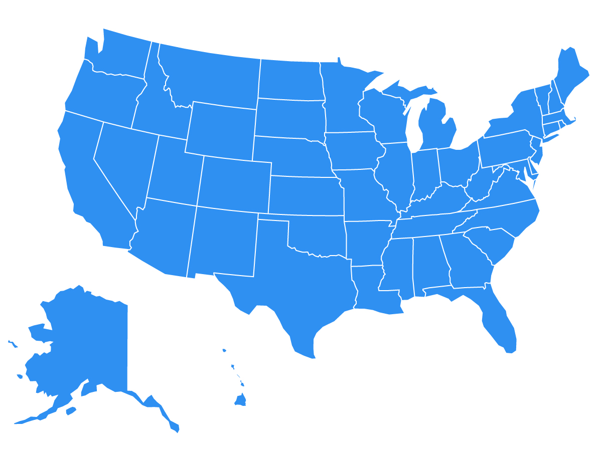

No system for setting up a government is perfect, including the American government. It’s difficult to maintain 50 different systems for voting or 50 different standards for education among the states. Running a multistate business can be difficult because a different set of taxes and regulations must be followed for every state.

Not all states have the same resources, so this can lead to a disparity in quality of services depending on the state a person lives in, even though all citizens are Americans.
Select each example to learn more.
Since the constitution puts education in the realm of state rather than federal control, the spending per student on education can vary wildly from state to state. Is it a good system if some American children have access to more education spending than others based on the state they live in?
The growing legal marijuana industry is complicated between state lines. Not only do laws vary from state to state—state and federal law often conflict.
For all the downsides, there are many advantages with the federal system. Think of each state and its policies as a laboratory of governmental ideas. A state can try out a new educational program or method of law enforcement to see the results. If it works out, other states can follow suit. This allows many different ideas to be tried out at the same time.
It can be argued that local and state governments can be more in touch with the needs of their residents than national lawmakers are. Another possible advantage could be how the federal government can step in during times of emergency. Natural disasters would be difficult to recover from (if not impossible) for an individual state. In cases such as this, and other large-scale endeavors such as military spending, it makes sense for the states to pool resources. Over time, large tasks such as disaster relief have been fairly nonpolitical and have received wide support.